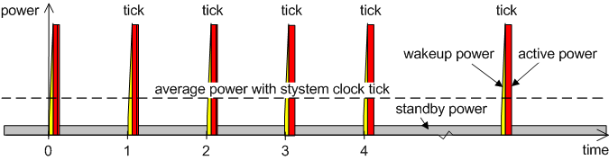
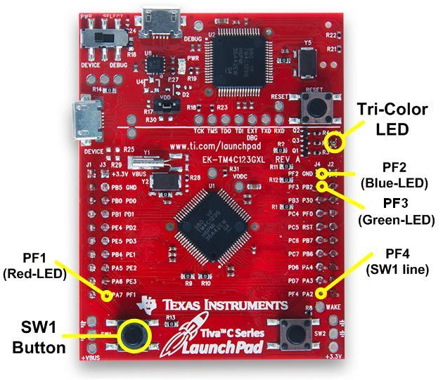
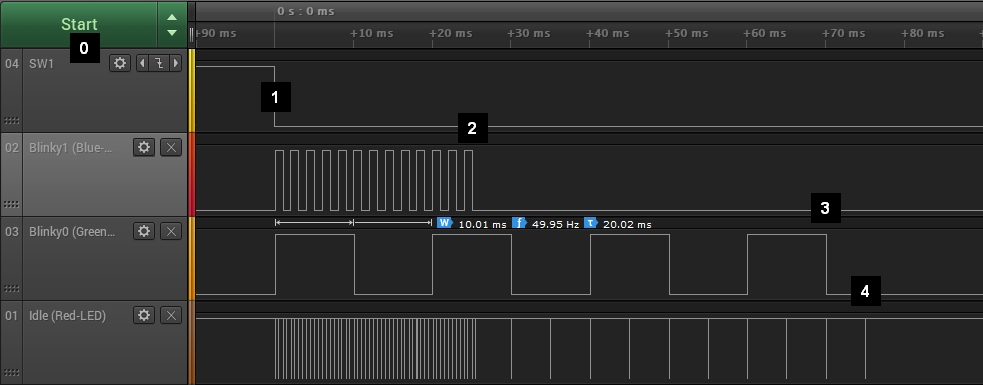
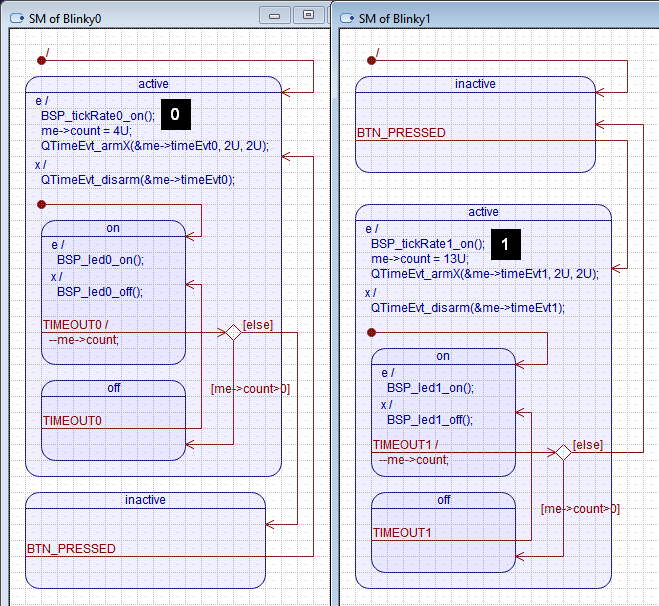

The main principle of low-power design for software is to keep the hardware in the most appropriate low-power sleep mode for as long as possible. Most commonly, the software enters a low-power sleep mode from the idle callback (a.k.a. "idle hook"), which is called when the software has nothing left to do and is waiting for an interrupt to deliver more work. The QP/C and QP/C++ Real-Time Embedded Frameworks (RTEFs) support the idle callback in all of the built-in real-time kernels, such as the cooperative QV kernel, the preemptive non-blocking QK kernel and the preemptive blocking QXK kernel. Also, such an idle callback is provided in all 3rd-party traditional RTOS kernels that QP/C/C++ have been ported to.
Most real-time systems, including traditional RTOSes and RTEFs, require a periodic time source called the system clock tick to keep track of time delays, timeouts, and QP::QTimeEvt "time events" in case of the event-driven QP frameworks. The system clock tick is typically a periodic interrupt that occurs at a predetermined rate, typically between 10Hz and 1000Hz.
While the system clock tick is very useful, it also has the unfortunate side effect of taking the processor out of a low power state as many as 1000 times per second regardless if real work needs to be done or not. This effect can have a significant negative impact on the power efficiency of the system.

Some real-time kernels use the low-power optimization called the "tickless mode" (a.k.a. "tick supression" or "dynamic tick"). In this mode, instead of indiscriminately making the clock tick fire with a fixed period, the kernel adjusts the clock ticks dynamically, as needed. Specifically, after each clock tick the kernel re-calculates the time for the next clock tick and then sets the clock tick interrupt for the earliest timeout it has to wait for. So for example, if the shortest wait the kernel has to attend to is 300 milliseconds into the future, then the clock interrupt will be set for 300 milliseconds.
This approach maximizes the amount of time the processor can remain asleep, but requires the kernel to perform the additional work to calculate the dynamic tick intervals and to program them into the hardware. This additional bookkeeping adds complexity to the kernel, is often non-deterministic and, most importantly, extends the time CPU spends in the high-power active mode and thus eliminates some of the power gains the "tickless mode" was supposed to bring.
Also, the "tickless mode" requires a more capable hardware timer that must be able of being reprogrammed for every interrupt in a wide dynamic range and also must accurately keep track of the elapsed time to correct for the irregular (dynamic) tick intervals. Still, "tickless mode" often causes a drift in the timing of the clock tick.
For the reasons just mentioned, the QP™ Real-Time Embedded Frameworks don't provide the "tickless mode". Instead, the QP™ frameworks support multiple clock tick rates, which can be turned on and off, as needed. The QP™ frameworks also provide methods for finding out when a given clock tick rate is not used, which allows the idle callback inside the application to shut down the given clock tick rate and also to decide which sleep mode to use for the CPU and the peripherals.
The support for multiple static clock tick rates is much simpler than the "dynamic tick", and essentially does not increase the complexity of the kernel (because the same code for the single tick rate can handle other tick rates the same way). Also, multiple static tick rates require much simpler hardware timers, which can be clocked specifically to the desired frequency and don't need particularly wide dynamic range. For example, 16-bit timers or even 8-bit timers are completely adequate.
Yet the multiple clock rates can deliver similar low-power operation for the system, while keeping the QP framework much simpler and easier to certify than "tickless" kernels. The rest of this example explains how to use the multiple static clock rates in QP/C/C++ and shows how to leverage this feature to achieve low-power software design.
The low-power example is located in QP/C and QP/C++ distributions, in the directory with the following structure:

The the low-power example illustrates the use of two clock tick rates to toggle the LEDs available on the EK-TM4C123GXL board. After the application code is loaded to the board, the Green-LED starts blinking once per two seconds (a second on and a second off), while the Red-LED lights up and stays on. If no buttons on the board are pressed, the Green-LED stops blinking after 4 times. The Red-LED shows the idle condition, where the system is in a sleep mode.
When your press the SW1-Button, the Green-LED starts blinking as before, but additionally, the Blue-LED starts blinking rapidly for 13 times (1/10 of a second on and 1/10 off).
So, depending when the SW1 switch is pressed, you can have only Green-LED blinking, or both green and blue blinking at different rates. The Red-LED appears to be on all the time.
The behavior just described is designed for the slow human interaction with the application. However, for more precise measurements with a logic analyzer, it is more convenient to speed up the application by factor of 100. This speed up can be achieved by editing the bsp.h header file:
The following logic analyzer trace shows the behavior of the low-power application at the faster time scale. The explanation section immediately following the tarce explains the most interesting points:

The versions of this low-power example for the QK and QV kernels use two active objects Blinky0 and Blinky1, which toggle the Green-LED at the slow tick rate 0, and the Blue-LED at the fast tick rate 1, respectively. The state machines of the Blinky0 and Blinky1 active objects are shown below:

BSP_tickRate0_on() to turn the tick rate-0 on. This is done before arming the time event me->timeEvt0 that uses the clock rate-0. BSP_tickRate1_on() to turn the tick rate-1 on. This is done before arming the time event me->timeEvt1 that uses the clock rate-1. The version of this low-power example for the QXK kernel uses one active object Blinky0 (with the state machine shown above), but instead of the Blinky1 active object, the QXK version uses an eXtended thread (::QXThread) called XBlinky1, with the code shown below:
isActive flag. When the flag is not set (meaning that the system is not active), the thread waits (and blocks) on the global semaphore XSEM_sw1. BSP_tickRate1_on() to turn the tick rate-1 on. This is done before later calling QXThread_delay() function, which in case uses the clock rate-1. The most important functionality in this low-power example is implemented in the idle callback located in the BSP (Board Support Package). The idle callback QK_onIdle() for the preemptive QK kernel and the idle callback QXK_onIdle() for the QXK kernel are almost identical and are explained in this section.
l_activeSet, which stores the information about active clock rates and peripherals. This bitmask is shared between the idle callback and the application-level threads. The QF_noTimeEvtsActiveX(0) function is called to check whether no time events are active at the clock rate-0.
NOTE: The QF_noTimeEvtsActiveX() function is designed to be called from a critical section, which is the case here.
l_activeSet bitmask. l_activeSet bitmask. QF_noTimeEvtsActiveX(1) function is called to check whether no time events are active at the clock rate-1. l_activeSet bitmask. __WFI() instruction stops the CPU and enters the low-power sleep mode The idle callback QV_onIdle() for the cooperative QV kernel is slightly different, because it is called with interrupts disabled. The following listing shows the complete QV_onIdle() callback, with the most important points explained in the section below:
l_activeSet bitmask is tested right away, because interrupts are already disabled The QF_noTimeEvtsActiveX(0) function is called to check whether no time events are active at the clock rate-0.
NOTE: The QF_noTimeEvtsActiveX() function is designed to be called from a critical section, which is the case here.